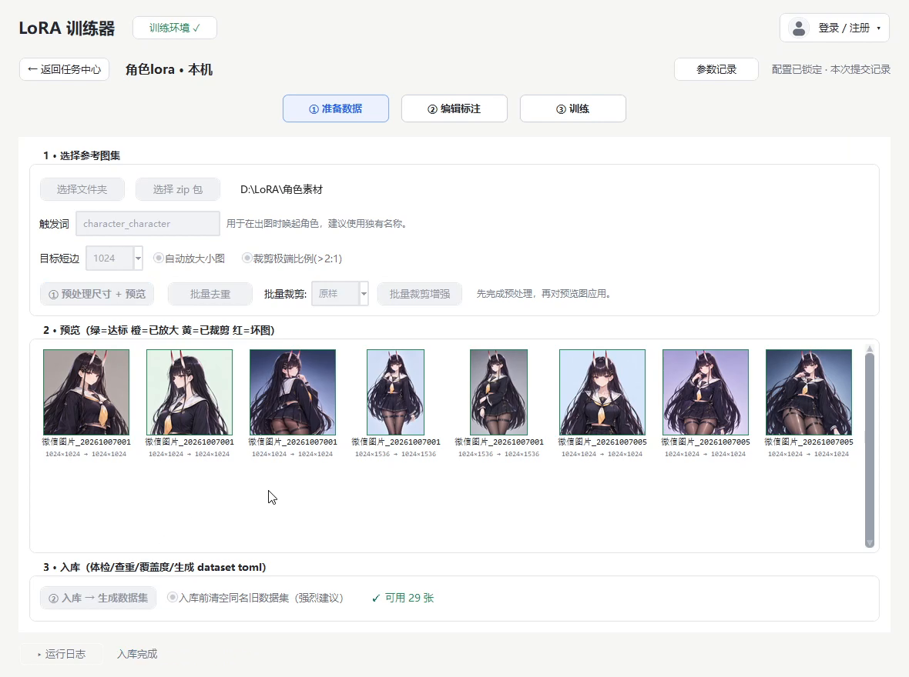
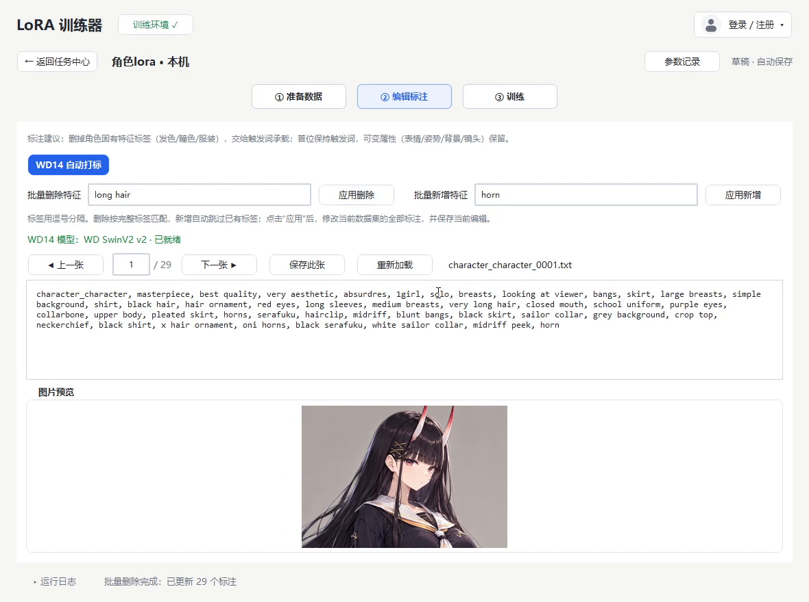
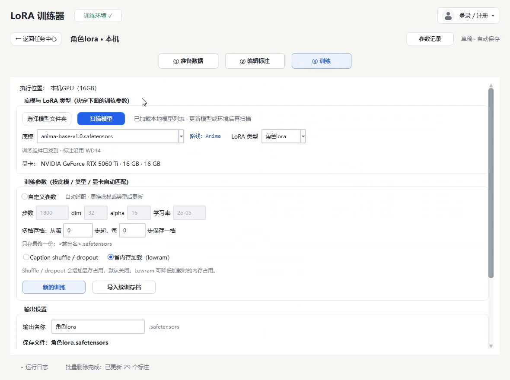
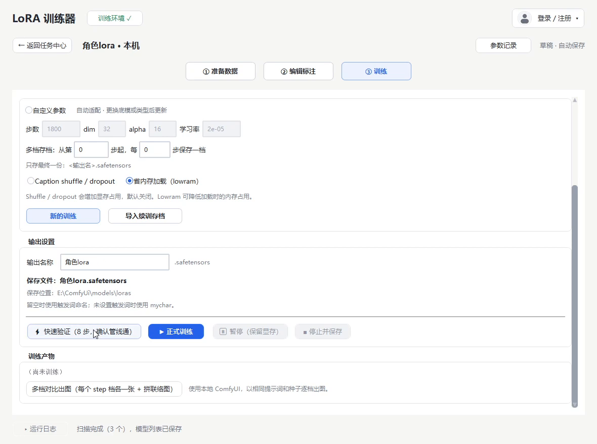

从参考图到可用的 LoRA，
只差几个按钮
素材预处理、WD14 自动打标、参数自动适配、训练与多档对比出图，全在一个桌面窗口里完成。
Windows 10 / 11 64 位 · 解压即用 · 需要本机已有 ComfyUI

训练里最烦的几步，都做成了按钮
不用记 sd-scripts 的参数，也不用自己写打标脚本。
素材准备，一次到位
短边自动放大、极端比例自动裁剪、批量去重与裁剪增强。预览图按状态着色，哪张不达标一眼就能看到。
WD14 自动打标
内置 SwinV2 打标模型，整批生成标签；支持批量增删特征、逐张校对和重新加载。
参数自动适配
按底模、LoRA 类型和显卡档位（8G–32G）自动给出步数、dim、alpha 与学习率，也可以切到手动参数自己调。
训练全程可控
先用 8 步快速验证确认链路，再开正式训练；支持暂停保留显存、停止并保存、中断后继续训练。
多档存档对比
可每隔若干步保存一档，训练完用本地 ComfyUI 以相同提示词和种子逐档出图，效果好坏直接看得出来。
复用本机环境
自动识别 ComfyUI 使用的 Python 来建独立训练环境，复用已有的 torch，省下 3~4 GB 下载；sd-scripts 随包内置。
增量更新
新版本只下载真正变化的文件，几秒完成；任务记录、配置、模型和产出都不会被覆盖。
云端训练，不用自己租服务器
本机显卡忙不过来时，把任务转到云端 GPU 接着训：参数和数据保持不变，按积分计费，不用自己配环境或租服务器。
训练界面与工作流程
每个任务独立管理图集、标注和训练参数，支持随时中断与继续。



四步开始
第一次用只需要配置一次训练环境，之后每次都是选图、标注、开训。
下载并解压
把完整包解压到空间充足的位置，建议路径里不要有特殊字符。
启动程序
双击 一键Lora.exe。如果 Windows 提示未知发布者，选择「更多信息 → 仍要运行」。
配置训练环境
首次启动点顶部「配置训练环境」，程序会自动寻找本机 ComfyUI 并搭好训练环境。
新建任务开训
准备数据 → 编辑标注 → 训练，三步走完就能得到 .safetensors。
运行环境
面向本机显卡训练，不上传素材。
| 系统 | Windows 10 / 11 64 位 |
|---|---|
| 显卡 | NVIDIA，8 GB 显存起步；16 GB 及以上更从容 |
| 已有环境 | 本机已安装 ComfyUI（便携版 / 整合包 / venv 均可），或手动指定训练 Python |
| 磁盘 | 预留底模、训练环境与产出的空间 |
| 安装方式 | 解压即用，免安装 |
支持的底模
按底模自动切换训练配方与参数：
Qwen-Image 与 Z-Image 需使用 BF16 原版底模，量化版不可训练。SD 1.5、SD 2.x、Flux 与 SD3 当前训练链路暂不支持，界面内参数仅作参照。
常见问题
需要会写代码或命令行吗？
不需要。所有步骤都在窗口里点选完成；打标、参数换算、训练命令和产物整理都由程序处理。
8 GB 显存能训练吗？
可以跑 SDXL 系的低显存档（768 分辨率桶、dim 16），速度会慢一些；SD 1.5 更宽松。程序会按显卡自动选择对应档位。
会改动我原来的 ComfyUI 吗？
不会。程序只读取 ComfyUI 使用的 Python，复制或另建一个独立训练环境，不修改原目录。
更新会丢任务或模型吗？
不会。更新只替换程序文件，任务记录、配置、训练环境、模型和产出都不在更新范围内。
支持 Flux、SD3、SD 1.5 或 SD 2.x 吗？
当前训练链路暂不支持这些架构，它们不会出现在可选训练方案中；界面内的相关参数仅供参照。
下载很慢怎么办？
安装包托管在 GitHub Releases，直连速度不稳定。可以换个时段重试，或使用加速工具；完整包约 107 MB，之后的小版本只需增量更新。
Windows 提示未知发布者？
程序没有购买代码签名证书，SmartScreen 可能拦截。确认来源后点「更多信息 → 仍要运行」即可。